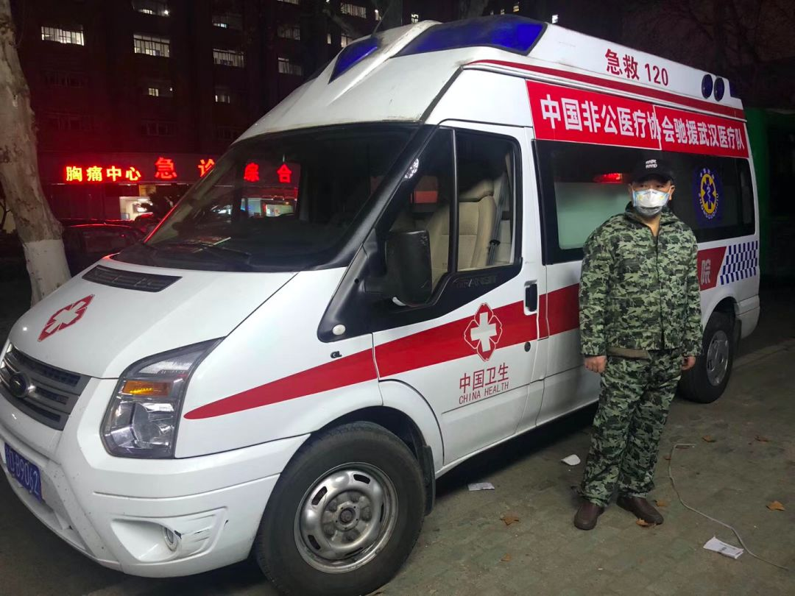

疫情下的武汉“守夜人”
原文链接 备份链接 2月的春光已经露出些明媚，但每当入夜，疫情下的武汉依然春寒料峭，霜寒刺骨。医护人员夜以继日地奋战在战“疫”一线，“宅家”的市民们或已进入梦乡，在城市的街头巷尾，还有一群“守夜人”出入于寒风中。黎明不远，终将来临。黎 …


作为一家改制后的非公医院，汉阳医院在武汉疫情中所面临的考验更为严峻。
在承担大量救治工作之后，医疗防护物资没有得到政府正规渠道下拨的保障。有一天，20个医生一个口罩也没有。
与公立医院一样，非公医院一样面对疫情，一样对抗疫情，一样猝不及防，一样挺身而出，没有丝毫退缩。
苦苦支撑的汉阳医院，终于在2月初迎来了一个好消息，它成为武汉市第五批新冠肺炎定点收治医院。

时间已经过去一个月多，武汉汉阳医院的管理层们仍会想起春节前后，几近崩溃的那些日子。
1月20日，成为武汉市第一批定点发热门诊后，医院像要崩盘了一样，无论是发热病人，还是非发热病人，全都涌入这间本来就略显拥挤的门诊大厅，就像一锅粥一样。前来排队输液的病人，因为没有位置，有的直接在自己的车子里面，挂个吊瓶就打起来了。
新型冠状肺炎蔓延的势头，在当时，就像火焰吞噬一堆干草，谁也不知道火焰什么时候会从中央熄灭，怎么才能熄灭。它在人体内肆虐，整个免疫系统失灵，像是被围困的城市，城门打开，敌军拥入。同时，它令整个武汉措手不及。
与众多抵挡在疫情最前面的公立医院不同，汉阳医院是一家企业改制的非公医院，这决定了在它与疫情的奋战中，困难尤为突出。
一方面是救治工作完全靠自身资源和社会捐赠，医院资金压力越来越大，一度需要通过银行贷款来解决资金不足的问题。另一方面，国家公共卫生应急管理体系没有把社会办医纳入，汉阳医院急缺的呼吸科、ICU医护力量，要通过非公医疗协会四处求援，其间也是困难重重。
即便如此，每次开院长会议时，管理层闭口不谈经营问题。一位医院管理层说，数次强调的就一句话，集中全院力量，打好这场战役。
疫情爆发整整一个月后，这家苦撑的改制医院终于被列为第五批定点收治医院，在物资调配与病人收治上纳入了区里的统一管理。

△ 受访者供图
疫情最严重时，医院倒下了34名医护
2019年12月底，汉阳医院收治了一位高热的“肺炎”患者，接诊医生感觉到这个病毒性肺炎不同以往，进展很快，病情很重。当时并没有想到，这种怪病传染性极强。直至1月21日，国家卫健委决定将新型冠状病毒感染的肺炎纳入法定传染病乙类管理，采取甲类传染病的预防、控制措施时，一些医院开始紧急防范，但病毒已经蔓延……
之后的一周，是最忙碌、最紧张、最痛苦的时候。一位医院高层回忆，发热门诊和急诊科几乎通宵达旦，平均每天就诊和输液超过300人次，最高峰时达到700多人次，放射科CT工作量由日常每天100多次增加到400多次，被确诊为新型冠状肺炎的患者每天就有好几十个。呼吸科收治了大量病人，原本规定床位只有40张，实际收治了70多个病人，整个病房全是加床。一进病房，通道和走廊两头都是人，咳嗽声、呼噜声、吵闹声相互交叠。
病房实在住不下，确诊患者却有增无减。“我们把内分泌科的病房改造成一个病区，与武汉卓尔控股集团成立了汉阳应急医院，设置了250张床位，大年初二（1月26日）就被启用。”上述高层回忆，当时整个武汉市陷入了一床难求的绝境。汉阳医院是一家三级医院，因此汉口、武昌其他区的病人，都找各种关系试图往汉阳医院转。

△ 转运病人的救护车（受访者供图）
“能够有一张床，得到一些救治，这在当时，患者就已经非常感谢了。”一位汉阳医院的医生说，就好比战争片里演绎的一样。
原武汉市委书记马国强1月27日晚在防控工作新闻发布会上说，当时几天里发热门诊的日均就诊人数超过1.5万人，而往年同期仅3000人左右。发热门诊是各地医院在冬春季流感等传染病高发季节专门为出现发热、咳嗽等症状提供诊疗服务的医疗区域，相当于疫情的分流管。但它受制于后端的定点收治医院医疗资源是否更得上。
武汉市从1月20日后就开始扩充定点收治医院，即在武汉市在金银潭医院、肺科医院的基础上，分三批征用了24家综合医院，临时改造成收治发热病人的定点医院。第一批和第二批定点医院提供床位4000余张。纵然如此，床位仍供不应求。定点医院在改造之中，火神山、雷神山、方舱尚未建立，患者处于焦灼的等待期。原有的医院压力极大，这股压力在一位当地医生看来是难以想象的，他甚至连发两句感叹，真的是难以想象的。“有时候病人排队要排到百把号，在等床位。”
焦灼感并不限于此。对于汉阳医院来说，还面临着诊治难题，在早期没有出台国家指南之前，病情判断完全没有前车之鉴，这在该院一位呼吸科医生看来，病人后期恢复怎样，到底有没有存活希望？心里都是打鼓的。
早期缺乏外援的情况下，汉阳医院不得已把医院外科、神经内科，甚至五官科耳鼻喉科，都组建成发热门诊。这样一支队伍也受到过质疑，是否不专业？对此，院方领导回复，“发热门诊有一个主要操作流程，在这方面经过一些培训，是可以应付的。”大年初一早上，迫于严峻现实压力，1000多名员工取消春节和所有休假，全部上岗，全院医护人员经过培训后参加呼吸内科两个病区和发热门诊轮班。
全部医护，押在一线防疫上。遗憾的是，一些医护倒下了，这成了汉阳医院一位副院长那段时间最大的心病。在1月20日到1月24日，疫情爆发最为严重的时期，医院倒下了38名医护。他也时常听到别的医院医护倒下的消息，有的院长走了，有的主任走了。那段时间，无形的心理压力时时刻刻揪住他，“一旦出现什么意外，责任很大。”院内感染令他更为困惑和痛苦，在市里面还没有出严格规范的时候，病人常到处乱跑，感染病人和非感染病人交叉在一起，医护、陪护也都交叉在一起。
最遗憾的事：早期仅有一台v60呼吸机
2月2日，苦苦支撑的汉阳医院，迎来了一个好消息，它成为武汉市第五批新冠肺炎定点收治医院。该院一位副院长舒了一口气，“纳入了政府的统一管理，在物资调配、行政管理、病人收治上，就可以由区里面统一安排了。”这种感觉，他形容就像是野战军，终于入编了一样。
在疫情早期，武汉各大医院都陷入医护缺乏、物资告急的困境。汉阳医院也不例外，但作为一家改制后的非公医院，它所面临的考验更为严峻。
“九省通衢”的武汉，是内陆最大的水陆空交通枢纽，其高铁网辐射大半个中国，这使得铁路、航运等国有企业在武汉布局集中。在企业医院数量丰富的背景下，武汉市较早开始了企业医院改制。
汉阳医院就在其列。这家坐落在老城区的医院，建于1953年，前身为汉阳铁路中心医院，是一家国企职工医院，原隶属于中铁大桥局集团公司。在2005年，医院进行了产权制度改革，引进湖北和润联合体作为控股投资方，遂变身为股份制非营利性医院，更名为“武汉市汉阳医院”。
被“剥离”后的汉阳医院，独立运行，自谋发展。医院全体职工同时进行了身份置换。医院引入现代企业管理制度，实行董事会领导下的院长负责制，逐步被推向了市场化大潮中。该院一位领导在接受记者采访时谈到，“市场”一词不可怕。市场会将医院的命运交与病人；由病人选择“投票”，从而造就各有定位、合理分工、充分竞争的医疗新格局。
曾经破旧的病房，老化的设备，在改制之后全部翻新，如今汉阳医院新建了三座大楼，不再依靠大桥局拨付的经费勉强度日。告别“大锅饭”体制，医院编制床位数从210张增加到1000余张，年门诊量从不足8万人增加到50余万人。这些都是15年间，汉阳医院全体职工自力更生的结果，来之不易。
但囿于人才和患者流量，中国的非公医院在与公立医院的竞争中，长期处在劣势地位。此次疫情中，非公医院自身的弱势与艰辛，展露无疑。一位民营医院管理层认为，与公立医院一样，非公医院一样面对疫情，一样对抗疫情，一样猝不及防，一样挺身而出，没有丝毫退缩。但相比公立医院，非公医院在疫情中的困难更多更大。因为初期，没有国家渠道的物资保障和援汉医护人员的支援。
“没有纳入定点医院之前，国家是不给拨款、物资的，必须是定点医院，才会有物资保障。”上述人士说，纳入定点之后，会按照危重病人抢救数、门诊病人数量，发放相应的物资。“但在此之前，我们要么是自筹，通过校友会、关系好的企业捐赠，要么就自救，自己花钱买物资。”
汉阳医院也不例外。该院医生透露，在承担大量救治工作之后，医疗防护物资没有得到政府正规渠道下拨的保障，完全靠自身资源和社会捐赠支撑。他记得有一天，20个医生连一个口罩都没有，导致医生们都不能上岗。
收治的第一批病人，在外辗转多日，病情很重。然而，那时的汉阳医院设备并不齐全，医院只有一台v60呼吸机，抢救重病患者需要用到呼吸机，大部分肺功能不好的病人，要靠高流量吸氧的呼吸机维系，医院都没有。这是汉阳医院呼吸科的一位医生最遗憾的事情。“如果医护人员更多一点，就能救更多的病人，医疗设备更好一些，一些危重病人能抢救过来。”

△ 支援医疗队带来设备（受访者供图）
“同样是奋战在抗疫一线，社会办医院都是通过各自厂家渠道采购，缺乏统一供应保障，各地区之间分配不均衡，实际上，应得到政府采购及物资保障平台支持。”中国非公立协会常务副会长郝德明认为，在调拨分配医疗物资时，兼顾社会办医院的抗疫需求，国家有关部门要将公立医院和社会办医纳入一盘棋。
对非公医护人员的补助，悬而不决
现有医护力量到达极限时，汉阳医院不得已求援。从1月23日开始，汉阳医院董事长张芾四处求助。郝德明收到武汉非公协会紧急求援，才了解到，前线医生忙到一个一个快倒下，每天的休息时间只有三四个小时。
经过多方动员，截至日前，已有150余名医护人员驰援汉阳医院。但调动过程波折不断。郝德明认为，国家在公共卫生应急管理体系，没有把社会办医的力量明确纳入到体系之内。“我们调动人员，要经过当地卫健委的同意，当地不同意，人还出不来。我们现在已经沟通了800多个医务人员，涉及到62家医院，大概有三分之一的医院都会碰到要去当地要卫健委开证明的情况。”
在武汉一家民营医院医生看来，支援的医护人员，其分配并不公平。疫情伊始，增援武汉的医护都是各地实力强劲的专家，多数来自公立医院。但这些顶级的呼吸科、ICU专家，并没有支援自己所在的医院。
作为此次疫情重灾区，武汉集结全国医护力量，急诊、重症学科更是重中之重。但在全国非公医疗的医护资源中，这方面是弱项。自负盈亏的生存压力下，民营医院目前普遍选择医美、牙科、妇科等轻资产的学科。突如其来的疫情面前，医疗人才的不相匹配很大程度上限制了大多数的社会办医驰援武汉的可能性。也可以说，非公立医院自身的不足，也在此次疫情中暴露无疑。
就在医院医护人员十分紧缺，几乎崩溃之际，医院向中国非公立医疗机构协会请求人员支援，郝德明会长协调，经各地卫健委批准同意，从全国组织了165名医护人员驰援汉阳医院，以解燃眉之急。
随着定点250张床位的开设，医院病区改造、设备药品和防护物品采购、人员加班补助费用等……一方面政府承诺的医疗费用全免还是需要医院先期垫付，另一方面急需扩大产能而进行各种投入，汉阳医院资金压力越来越大，其控股方和润集团一度需要银行贷款，来解决资金不足的问题。
但每次开院长会议时，管理层闭口不谈经营问题。一位医院管理层说，数次强调的就一句话，集中全院力量，打好这场战役。自己医护人员，一个不落下。救治更多的患者，应收尽收。他认为，在整个战疫中，自己真正是这样做的。
他透露，每年春节前后，是医院经营的黄金时期。疫情一来，医院经营基本停滞。“我们有1000多张床位，在疫情最高峰的时候，床位使用率不到正常的二分之一。这样，对我们的收入肯定有影响。另外，医护人员全部到一线去了以后，其他科室就瘫痪了。尤其是封城之后，很多手术都没有开展。”
国家卫健委医政医管局副局长焦雅辉在国务院发布会上介绍，在薪酬待遇方面，出台了相关政策。在湖北的一线医务人员，临时性工作补助标准提高一倍，薪酬待遇提高两倍，扩大卫生防疫津贴发放范围，确保覆盖到所有一线医务人员。
八点健闻了解到，湖北一线医务人员，来自公立医院，可享有每天300元的补助。非公的补助来自哪里，此前悬而未定。最近经反复沟通，“区里面终于口头答应了。”
汉阳医院还算幸运。另一位民营医院的副院长说，“补贴方面，无法落实。”目前仍是要靠企业自身的经营、外面捐赠，才能解决给职工的补贴和工资。国家明确了要把一线工资提高两倍以上，但非公医院尚无此待遇。
针对补贴的问题，武汉当地一家定点收治的民营医院高层，在前不久，与所在区领导沟通过。但得到反馈却是，在政府财政预算这一块，并没有非公这部分。在他看来，有时候，非公医院就像一个旁系，出身不好，先天不足，和公立医院还是有区别的。
在汉阳医院一位副院长看来，汉阳医院是非营利性医院，与公立医院所承担的工作职能差不多，在疫情之中，尚且如此。而一些民营的营利性医院更为艰难。
2月25日晚，汉阳医院开始“转场”，腾空新冠肺炎患者，恢复日常门诊。据了解，武汉亚洲心脏病医院从3月2日开始恢复门诊。在武汉之外，受疫情影响，许多民营医院和诊所停工。没有了营业收入，但成本却没有减少：店铺租金、员工工资、设备折损……在发稿之前，一位上海民营医院管理层说，外科诊所还不能完全恢复正常的工作。在他看来，疫情对整个医疗服务市场的冲击很大，同时也带来重新洗牌的机会。
经此一疫，民营医院什么时候能真正恢复？
谭卓曌|撰稿
微信号：tzz19930706
季敏华|责编
微信号：janejiminhua

我们尊重原创版权，未经允许请勿转载。
授权转载
郑琪 微信号: 1281949389
商务合作
上海：leslee 13916263824
北京：Jessie 13911125922
线索爆料、意见反馈，加入核心读者社群
请扫码联系健闻君

让朋友们看到你也在看
↓↓↓
健闻谭卓曌
长按二维码向我转账
受苹果公司新规定影响，微信 iOS 版的赞赏功能被关闭，可通过二维码转账支持公众号。
文章已于修改
原文链接 备份链接 2月的春光已经露出些明媚，但每当入夜，疫情下的武汉依然春寒料峭，霜寒刺骨。医护人员夜以继日地奋战在战“疫”一线，“宅家”的市民们或已进入梦乡，在城市的街头巷尾，还有一群“守夜人”出入于寒风中。黎明不远，终将来临。黎 …
原文链接 备份链接 【财新网】（记者 赵宁 实习记者 曾美雅）北京大学人民医院一名住院病人感染新冠肺炎的消息传出后，北京疫情防控备受关注。国家主席习近平在2月23日的讲话中，更是将“全力做好北京疫情防控工作”作为了七项重点工作之一。由于医 …
原文链接 备份链接 跳广场舞、练瑜伽、打太极、复习备考……每天我们都能从社交媒体上了解到武汉“方舱医院”内患者们的日常生活。这些看似平常的活动，却为紧张的抗疫工作带来了一丝活力与鼓舞。 2月3日晚，武汉市宣布将在武汉国际会展中心、洪山体育 …
原文链接 备份链接 基层工作的压力不断加大2月6日，武汉市蔡甸区人民医院的重症病房。摄影/长江日报 陈卓 武汉战“疫”的攻坚时刻 *本刊记者/刘远航 李明子 黄孝光* 发于2020.2.24总第936期《中国新闻周刊》 雷暴与风雪相继到 …
原文链接 备份链接 层层战略部署之后，武汉保卫战已经开始。这是一场与病毒和传染源赛跑的立体战役。 要想打赢这场战役，我们需要在时间上，跑在病魔之前，调集重兵，救治患者；在空间上，则要寻遍传染源，斩断传播途径，将其隔离。 《三联生活周刊》 …